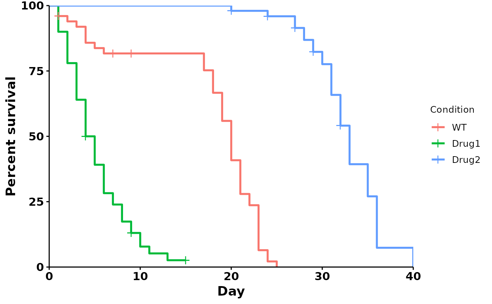

run_bulksurv.RdThis function performs a default survival analysis by running these steps:
Calculate individual survival: get_indiv_surv()
Fit survival curve by condition: fit_surv()
Plot survival curve: plot_surv()
run_bulksurv(
sample_data,
sample_order = unique(sample_data$condition),
type = "survival",
print_stats = TRUE,
print_plot = TRUE,
returnData = FALSE,
add.conf.int = FALSE,
add.pval = FALSE,
add.median.survival = FALSE,
p_adjust_method = "BH",
...
)data.frame, bulk survival data
character vector of conditions. Eg: c("WT", "Drug1", "Drug2")
character, either "survival" (survival curve) or "mortality" (mortality curve)
logical, whether to print median survival, log-rank test and pairwise log-rank test with p-value corrections. Default: TRUE
logical, whether to print the plot. Also returns plot as a
ggplot object for further modification. Default: TRUE
logical, whether to return plot and statistics as a list? Default: FALSE
logical, whether to add the 95% confidence intervals. Default: FALSE
logical, whether to add the log-rank test adjusted p-value. Default: FALSE
logicla, whether to add the median survival line. Default: FALSE
either "holm", "hochberg", "hommel", "bonferroni",
"BH", "BY", "fdr", "none". Default: "BH". For details, see ?stats::p.adjust.
additional plot parameters passed to survminer::ggsurvplot.
Some useful parameters: add.conf.int = TRUE, add.pval = TRUE, add.median.survival = TRUE.
A ggplot2 object for the survival curve
# Default
p <- run_bulksurv(sample_data)
#> $median_survival
#> Call: survfit(formula = Surv(day, status) ~ condition, data = df_isurv)
#>
#> n events median 0.95LCL 0.95UCL
#> condition=WT 50 47 20.0 19 21
#> condition=Drug1 50 46 4.5 4 6
#> condition=Drug2 50 42 33.0 32 35
#>
#> $logrank
#> Call:
#> survival::survdiff(formula = Surv(day, status) ~ condition, data = df_isurv)
#>
#> N Observed Expected (O-E)^2/E (O-E)^2/V
#> condition=WT 50 47 31.2 7.94 12.9
#> condition=Drug1 50 46 12.5 89.99 128.1
#> condition=Drug2 50 42 91.3 26.60 123.3
#>
#> Chisq= 186 on 2 degrees of freedom, p= <2e-16
#>
#> $pairwise
#>
#> Pairwise comparisons using Log-Rank test
#>
#> data: df_isurv and condition
#>
#> WT Drug1
#> Drug1 2.3e-14 -
#> Drug2 < 2e-16 < 2e-16
#>
#> P value adjustment method: BH
#>

# Customized plot
p <- run_bulksurv(sample_data,
sample_order = c("WT", "Drug1", "Drug2"),
print_stats = FALSE, # Don't print stats
add.pval = TRUE, # Add pvalue
add.median.survival = TRUE, # Add median survival
palette = c("black", "red", "purple"), # Custom colors
legend.title = "", # Remove legend title
legend.position = c(0.9, 0.9), # Position legend at top right
break.x.by = 5 # x-axis breaks at 5-day intervals
)